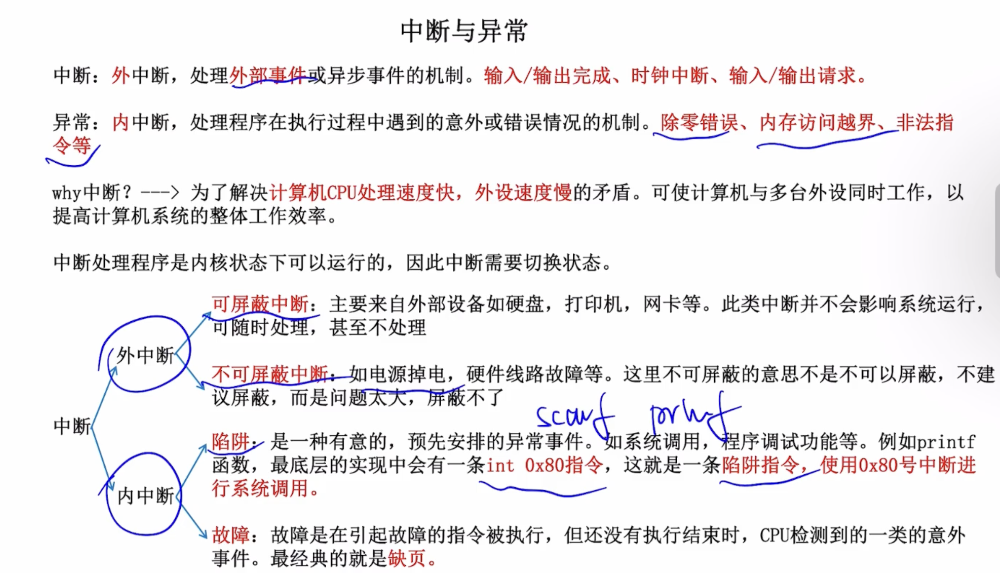
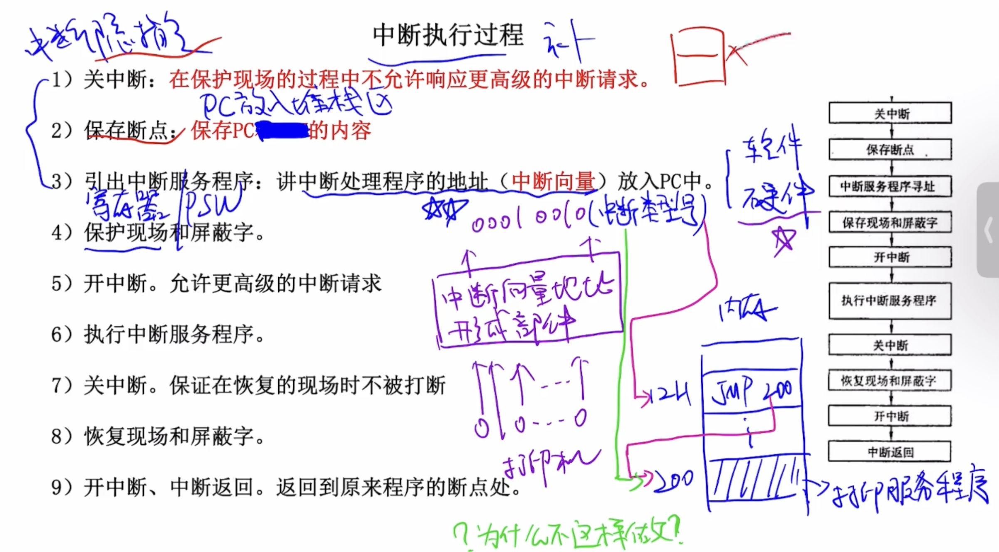
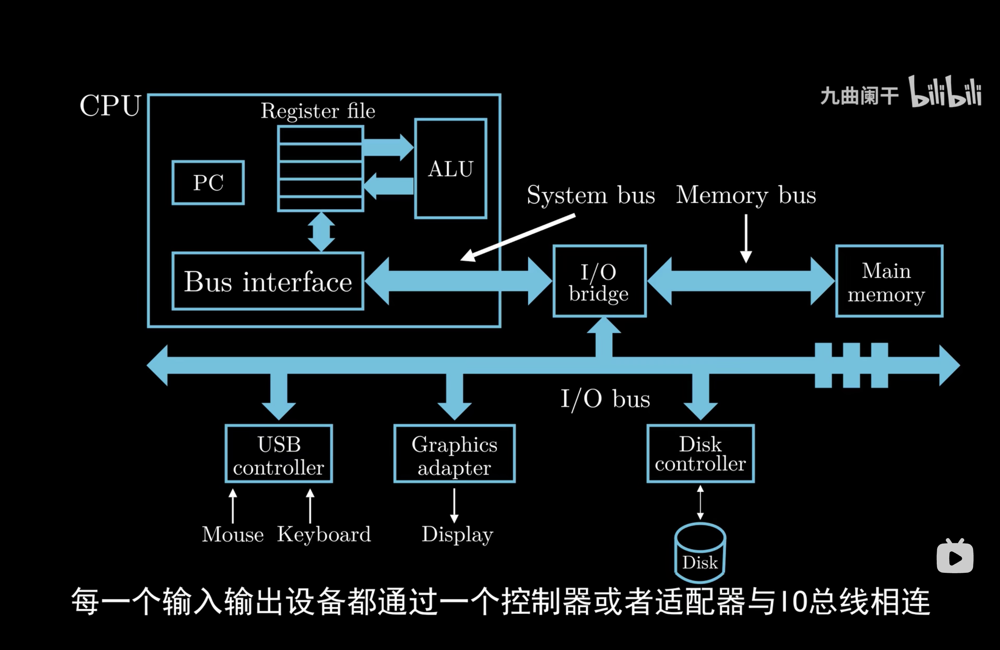
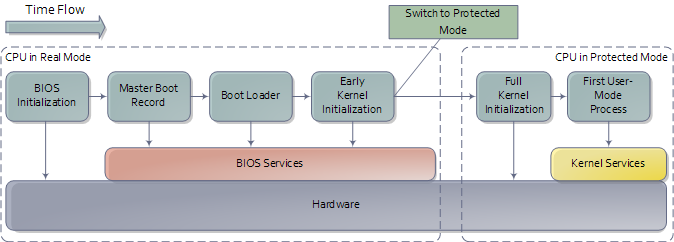

操作系统（十）中断
第七章 中断
中断与异常

中断执行过程

当通过键盘给当前进程输入参数时的流程（IO中断）
中断流程
- 用户键盘输入
- 键盘控制器生成扫描码并触发中断 (IRQ1)
- CPU 暂停当前进程，响应中断
- CPU执行中断处理程序，获取键盘输入
- 恢复被中断的任务
- 用户进程读取缓冲区输入（系统调用，使用“陷阱”内中断）
用户如何使用系统其他资源（系统调用）
用户态的程序只能使用内存中用户段，不能使用内核段。内核态可以访问任何内存数据。


中断流程
用户态的程序只能使用内存中用户段，不能使用内核段。内核态可以访问任何内存数据。
缓冲区溢出通常发生在程序使用固定大小的内存缓冲区来存储用户输入时，没有对输入数据的长度进行适当检查。攻击者利用这一点，将过大的输入数据注入缓冲区，导致：
覆盖关键数据：覆盖函数的返回地址、指针或其他重要变量。
注入恶意代码：将攻击代码注入溢出的内存区域，并操纵程序跳转到攻击代码执行。
二叉树题型的算法主要分为回溯，动态规划，迭代三类。从本质上三者都是在遍历算法基础上的修改。回溯关心的是在每个结点的访问过程中如何更新结果；动态规划关心的是如何拆解出子问题，不具体分析每个结点的状态，而是通过划分子问题让其通过基本问题递归解决；迭代主要是指BFS层序遍历，适用于与深度（或高度）相关的问题求解
int fib(int n)，应该翻译成计算数列第n项并返回数列的值B站讲解视频：线程池原理与实现
线程池（Thread Pool）是一种基于池化思想管理线程的工具，经常出现在多线程服务器中，如MySQL。
线程过多会带来额外的开销，其中包括创建销毁线程的开销、调度线程的开销等等，同时也降低了计算机的整体性能。线程池维护多个线程，等待监督管理者分配可并发执行的任务。这种做法，一方面避免了处理任务时创建销毁线程开销的代价，另一方面避免了线程数量膨胀导致的过分调度问题，保证了对内核的充分利用。

C 和 CPP 区别是什么
| C | C++ | |
|---|---|---|
| 编程范式 | 面向过程 | 面向对象 |
| 函数重载 | 无 | 有 |
| 引用 | 无 | 有 |
C++编译过程
预处理：展开include和define
Raft 是一个管理 replicated log 的算法
Raft 实现共识的机制
状态转移（State Transfer）：Primary将自己的完整状态（例如内存中的内容），拷贝发给Backup
复制状态机（Replicated State Machine）：将来自客户端的操作或其他外部事件，从Primary传到Backup。由于外部操作比服务的状态要小得多，所以大多采用该方法，缺点是同步会比较复杂
主虚拟机(Primary VM)简称为主机，Backup VM 简称为备机。
VMware FT 需要两台物理服务器，主机与备机保持同步，虚拟机的虚拟磁盘在共享存储上。
在文件系统和应用程序间有一层抽象层，称为虚拟文件系统（VFS）
VFS向应用层提供统一接口，具体实现不同文件系统有不同实现，VFS将函数指针指向对应函数
多个进程间可能存在依赖关系，为了保证其按依赖关系执行，操作系统需要通过一种机制保证
// counter: the count of item in buffer
// empty: buffer have empty space or not
// full: buffer have item or not
void producer()
{
while (true)
{
if (counter == BUFFER_SIZE)
sleep_on(empty);
buffer[in] = item;
in = (in + 1) % BUFFER_SIZE;
counter++;
if (counter == 1)
wake_up(full);
}
}
void consumer()
{
while (true)
{
if (counter == 0)
sleep_on(full);
item = buffer[out];
out = (out + 1) % BUFFER_SIZE;
counter--;
if (counter == BUFFER_SIZE - 1)
wake_up(empty);
}
}问题是上述方法无法解决多生产者/消费者的情况，因为只能释放旧的进程，所以需引入新的变量来记录更多的信息
信号量若为n（n<0）表示有｜n｜的进程阻塞，大于0表示有n个空闲资源
在编译形成可执行程序时，用到的地址都是从0开始的相对地址，也被称为逻辑地址。但被加载到内存后可能使用任意一块空闲地址，所以需要将逻辑地址转化成内存中实际的物理地址，即重定位。
有以下几种解决方法：
编译时重定位：需要在编译时确定哪块内存空间空闲，且在装入前不允许使用（用于执行固定任务的计算机系统，如嵌入式系统）
载入时重定位：在程序载入时，根据初始内存地址修改程序里的逻辑地址，但如果进程阻塞换出内存后换入时的地址不一定是之前的地址，造成错误
编译时加上-g选项
| 命令名称 | 命令缩写 | 命令说明 |
|---|---|---|
| run | r | 运行一个待调试的程序 |
| continue | c | 让暂停的程序继续运行 |
| next | n | 运行到下一行 |
| step | s | 单步执行，遇到函数会进入 |
| until | u | 运行到指定行停下来 |
| finish | fi | 结束当前调用函数，回到上一层调用函数处 |
| return | return | 结束当前调用函数并返回指定值，到上一层函数调用处 |
| jump | j | 将当前程序执行流跳转到指定行或地址，不运行跳过的代码 |
| p | 打印变量或寄存器值 | |
| backtrace | bt | 查看当前线程的调用堆栈 |
| frame | f | 切换到当前调用线程的指定堆栈 |
| thread | thread | 切换到指定线程 |
| break | b | 添加断点 |
| tbreak | tb | 添加临时断点 |
| delete | d | 删除断点 |
| enable | enable | 启用某个断点 |
| disable | disable | 禁用某个断点 |
| watch | watch | 监视某一个变量或内存地址的值是否发生变化 |
| list | l | 显示源码 |
| info | i | 查看断点 / 线程等信息 |
| ptype | ptype | 查看变量类型 |
| disassemble | dis | 查看汇编代码 |
| set args | set args | 设置程序启动命令行参数 |
| show args | show args | 查看设置的命令行参数 |


上电自检
主板的固件（BIOS 或 UEFI）执行硬件检测，检查 CPU、内存、显卡、键盘等设备是否正常
加载 BIOS 或 UEFI
将函数声明为inline可以避免函数调用的开销，空间换时间

分配器：为容器分配内存
迭代器：算法只能通过迭代器访问容器
当执行throw时，throw后的语句都不执行，控制权转移到与之对应的catch模块
退出catch后，catch模块中的局部变量将会销毁
当异常处理完毕后，异常对象将被销毁
try{
//...
}catch (exception_a){
//...
}catch (exception_b){
//...
}其中一个被捕捉，跳过下面的catch
引用作为成员变量
函数返回引用，可以将返回值做左值
通过类的其他对象初始化当前对象（有默认拷贝构造方法，成员对成员的拷贝，可能发生对象的嵌套拷贝）
类不是实体，对象是实体
成员变量（filed）属于对象
成员函数（member function）属于类
列表初始化（initialize list）仅对成员变量初始化。
在构造函数里对成员变量初始化则为先初始化（默认）后赋值，故所有成员变量必须要有默认的初始化方法（成员变量包含其他类但该类没有默认构造函数则会报错）。构造函数无法主动调用。